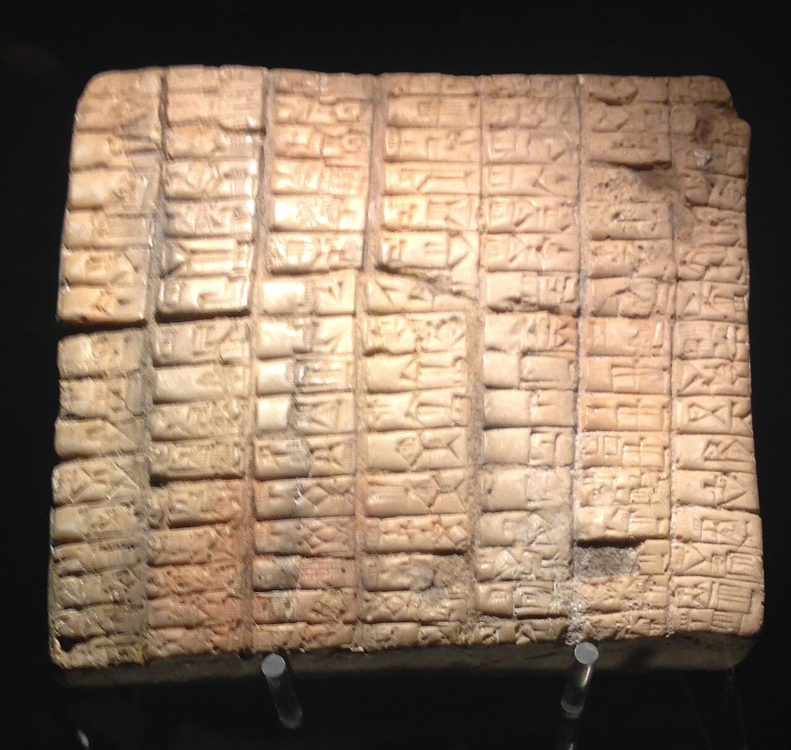

Ebla Tablets

- Find Name
- Ebla Tablets
- Historical Period
- Bronze Age
- Artifact Date
- c. 2400-2250 BC
- Date Discovered
- 1974
- Discovery Location
- Tell Mardikh (Ebla), Syria
- Current Location
- National Museum of Damascus, Damascus, Syria; Idlib Museum, Idlib, Syria
- Timeline Era
- Primeval / Patriarchs
- Description
- An archive of some 17,000 clay tablets and fragments from the royal palace at Ebla, written in Sumerian and in Eblaite, an early Semitic language. They record trade, treaties, offerings, and thousands of personal and place names from the third millennium BC.
- Biblical Significance
- Early claims that Ebla proved specific patriarchal stories were overstated and have been corrected by scholars, but the tablets genuinely show a sophisticated Semitic world long before Abraham, with names and places resembling those in Genesis. They remind us the patriarchs stepped into a real, documented ancient world, and that careful honesty strengthens rather than weakens faith.
- Evidence Class
- Contextual
- Interpretations
- Scholars agree the tablets are a genuine third-millennium archive; early sensational claims linking Ebla’s names to the patriarchs were withdrawn, and the tablets are now valued as background to the ancient Near East, not as patriarchal evidence.
- Scripture Illuminated
- Related People
- Related Books
- Related Events
Awaiting Review Not yet checked against scholarly sources. Treat its claims as provisional until this entry is reviewed. About verification
Last reviewed: not yet reviewed